Contents
Introduction (and sample files)Standard PCR
Adding restriction enzyme cloning sequences
Saving a printable summary of the selected primer pair
Exporting selected primers to a spreadsheet
Advanced Features
Finding primers
Amplifying user-defined regions
Specifying PCR component concentrations
Advanced BLAST searching
Using a local BLAST server
Using other programs to communicate with PerlPrimer
Introduction
This tutorial covers most of the commonly used features of PerlPrimer, for standard PCR, real-time PCR and sequencing, using the human gene PGR (encoding the Progesterone Receptor protein) as an example. Example files for each section may be downloaded below (right-click on the links and choose either "Save Target As ..." or "Save Link to Disk ...", depending on your browser).
Human PGR cDNA sequence
Human PGR genomic sequence
standard PCR perlprimer file
real-time PCR perlprimer file
sequencing perlprimer file
The tutorial is based upon PerlPrimer 1.1 - users of older versions may find some features unavailable and are advised to upgrade to the latest version. All screenshots were made using the program running under Linux, however, the program should behave identically under Windows and MacOS X.
In addition to this tutorial, PerlPrimer also comes with extensive "Balloon Help", enabled by default (and which can be turned on or off in the Help menu). Simply hold the mouse pointer over a button or feature and a explanatory message should be displayed.
While a DNA sequence may be opened from the sequence input area (click on the icon), the simplest means of retrieving a sequence is to use the Ensembl database tool. Click on the "Retrieve gene from Ensembl" icon or select it from the File menu. Enter "pgr" as the gene name and select "Homo_sapiens" as the organism. Make sure that "cdna" is set as the retrieval type, and click OK.
You should see a screen similar to that shown below (note that on earlier versions the amplification range will not be set automatically - click the "Set from ORF" button to do so) The range will now be set by default to the largest Open Reading Frame (or ORF) present in the sequence. The range is displayed by two boxes around the DNA sequence - one orange (the outer range) and one blue (the inner range). All primers will be found within the orange box and outside of the blue box.
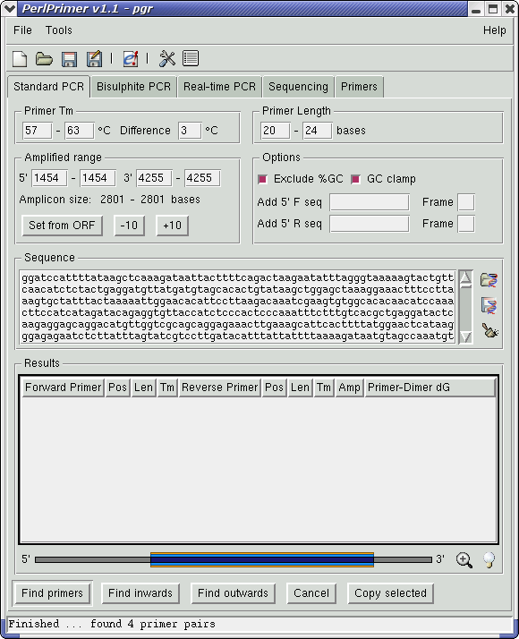
(The following example considers cloning a gene by PCR amplification into an expression plasmid. Note, however, that primers may be designed around other regions of interest as well as genes or that amplification boundaries may be entered manually (see the section "Advanced uses" below))
To clone the cDNA ORF into an expression plasmid, we will generally want a forward primer before or encompassing the initiating ATG, and a reverse primer before the terminal stop codon. The simplest way to do this to use the "Find primers for cloning" command from the Tools menu - this will automatically decrease the 5' outer range and 3' inner range until primers pairs are found. (There is another way to do this - see the "Advanced Features" section below). Using the standard default parameters, this should find four primer pairs, the first one amplifying from bases 1443 -> 4226. (see screen shot below)
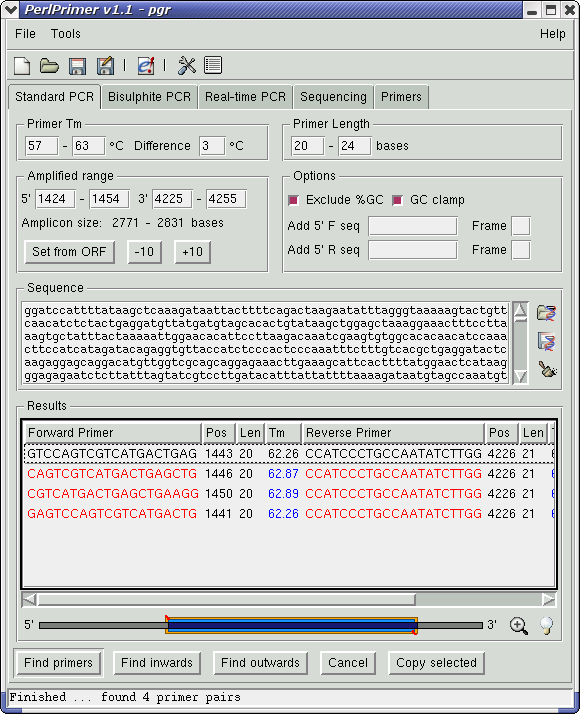
Double-clicking on this primer pair (or pressing the right arrow key on the keyboard) will switch to the Primers tab, showing primer information and stable primer-dimers. The most stable extensible primer-dimer is fairly weak (dG°37 of -2.00 kcal/mol), and although the non-extensible Forward vs. Forward dimer may slightly reduce the primer population, it should not cause problems for the purpose of cloning the gene. (screen shot)
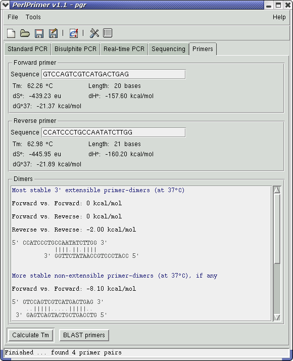
There is also a button on this page to BLAST primers using the NCBI BLAST server. Click on this and wait for the BLAST results to come up (this may take a minute or two - the server can be quite slow at times) Limit the results to human only by typing "Homo" into the search box and clicking the Search button. (screen shot) The forward primer is fairly unique, and although the reverse primer is less so it should be OK to amplify from. Return to the Standard PCR page and select this primer pair.
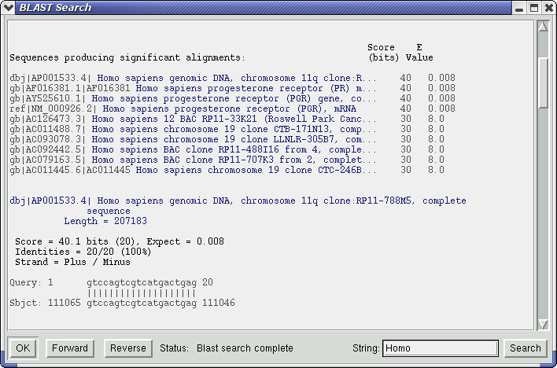
Adding restriction enzyme cloning sequences
The example provided here will clone the PGR ORF into GFP-fusion constructs (Clontech plasmids EGFP-C1 and EGFP-C2), creating both an N-terminal and a C-terminal fusion protein when translated. Select "Add cloning sequences" from the Tools menu. This will bring up a dialogue box with the ability to select restriction enzyme sites to add to the 5' end of each primer. By default, only those 6-base cutting enzymes that will not cut the DNA sequence within the outer range are listed. Looking at the restriction sites present in the plasmid MCS and comparing to the list of non-cutting enzymes, we can see that BglII and EcoRI can be used. Select these (see below) and click OK. Finally, we need to add the frame that the sites lie in, relevant to the EGFP gene (this is obviously only necessary when creating fusion proteins). Looking at the plasmid MCS, it should be clear that both BglII for EGFP-C1 and EcoRI for EGFP-N2 are in frame 0 (where the frame can be one of 0, 1 or 2 and 0 represents a sequence in frame). Enter "0" into each frame box.
EGFP-C1 MCS:
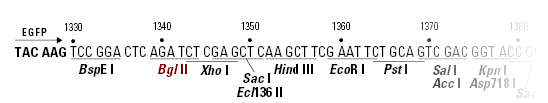
EGFP-N2 MCS:
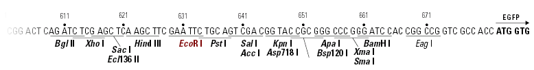
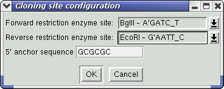
Clicking on the icon next to the DNA graphic (also by right-clicking on the DNA graphic) will bring up an alignment of the DNA sequence and primers with cloning sequences attached. The ORF is translated and codons are highlighted (see below). Note the inserted Adenine base between the forward primer and the cloning site.

Saving a printable summary of the selected primer pair
Clicking on the icon (or selecting "Generate Report" from the Tools menu) will save a text file listing the selected primer pair, statistics and primer-dimers of each primer and an alignment of the primers against the DNA sequence.
Exporting selected primers to a spreadsheet
If satisfied with a primer pair or a group of primer pairs, right-click on the primer list and choose "Copy", or simply press Ctrl-C. The primers are copied in a tab-delimited format that can be pasted into any spreadsheet application.
Designing real-time PCR primers with PerlPrimer is a simple and straightforward process. This tutorial uses the Human PGR gene as an example.
Click on the "Retrieve gene from Ensembl" icon (picture) or select it from the File menu, enter "pgr" as the gene name and select "Homo_sapiens" as the organism. Click OK. PerlPrimer will automatically download the genomic and cDNA sequences for the gene. You should have a screen similar to that below.
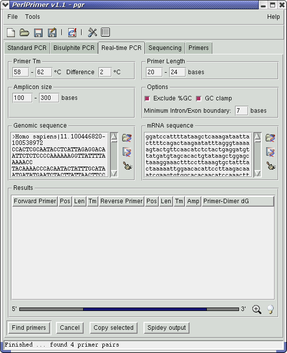
Click on the "Find Primers" button. PerlPrimer runs the application Spidey, which finds intron/exon boundaries (displayed as white lines across the DNA graphic). It then selects primer pairs that will produce an amplicon within the bounds specified, which span at least one intron/exon boundary and in which at least one primer pair lies across an intron/exon boundary. (Thus the primers should only amplify cDNA and will not amplify genomic DNA) Primers are sorted by extensible primer-dimer stability. In this case, no primers are found on the first run - probably because the regions around the intron/exon boundaries have an abnormally high or low GC content. To test this, try changing the cutoffs for GC% from 40%-60% to 35%-65% (you can do this in the Preferences, under the "Exclusions" tab).
Searching for primers again now yields over 400 primer pairs (see below).
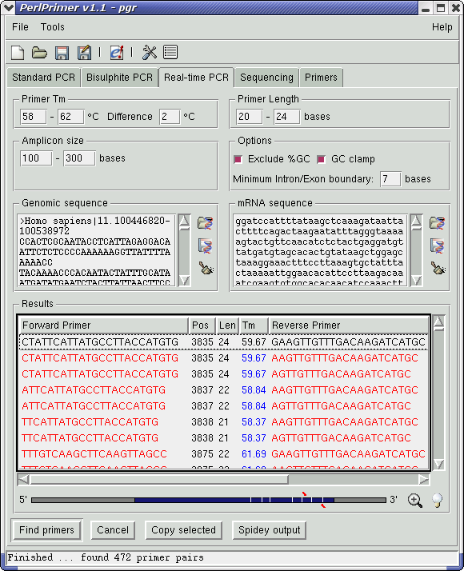
Of these, the first primer pair should be fine - BLAST searching as detailed above suggests that both primers are specific. Clicking on the icon now displays the intron/exon boundaries with the primers aligned (see below).
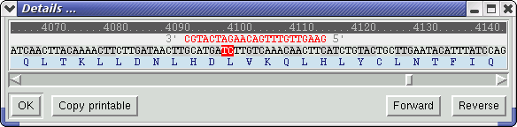
Finding sequencing primers for any sequence is also extremely simple. Using the example above of the human PGR cDNA sequence, open the sequence (or retrieve it from Ensembl), check that the default "Primers every ... bases" is appropriate for your average sequence read-length, and click the "Find Primers" button. Suitable primers will be listed, or if a gap is found where no primers match the required parameters, a dialogue will displayed informing the user that the search parameters will need to be relaxed. By default, primers are only listed if all primer-dimers have a dG°37 less than -5 kcal/mol - this can be varied if required. In this case, we need to increase the maximum read length to 800bp to find primers (screenshot).
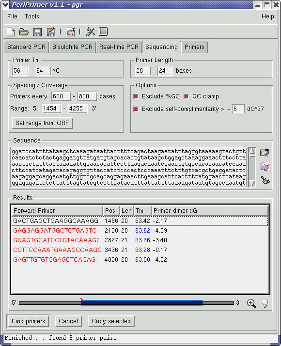
Two other buttons in the "Standard PCR" and "Bisulphite PCR" pages that have not been mentioned above are the "Find Inwards" and "Find Outwards" buttons - useful for amplifying regions of interest. The "Find Inwards" button reduces the inner amplified range by 10 base increments until suitable primers are found; the "Find Outwards" does the opposite - increasing the outer amplified range by 10 base increments until primers are found.
The inner and outer ranges can also be adjusted by using the mouse - dragging with the left mouse button affects the inner range; dragging with the middle mouse button (or the left button with the Ctrl key held down) affects the outer range.
Amplifying user-defined regions
While PerlPrimer will by default automatically find the largest ORF (or CpG islands) in a sequence, it is also possible to use a user-defined region, or number of regions. This can be achieved by capitalising the region of interest (most word processing/text editor programs should be able to do this) before opening the sequence in PerlPrimer, and selecting "Defer to capitalised regions" in the Preferences under the "General" tab. (click on the icon or select "Preferences" from the Tools menu). The internal ORF and CpG island detection algorithms are now bypassed.
It is also possible to manually specify the base positions to amplify from by typing in the numbers into the Amplified Range section.
Specifying PCR component concentrations
PCR component concentrations are set by default to the standard PCR conditions of 1.5mM Mg++, 50mM Monovalent cations (i.e. Na+, K+, etc), 0.2 mM dNTPs and a final concentration of each primer as 200mM.
These concentrations can be changed in the Preferences under the "General" tab (click on the icon or select "Preferences" from the Tools menu). Please note that changing any of these values (including the primer concentration) will affect the Tm.
Most parameters of BLAST searches (including the Expect value, the database and the ability to limit searches to an organism) can be set in the Preferences, under the "Bioinformatics" tab.
As of version 1.1.5, users may install and use a local BLAST server and data files. Binaries and databases are available from the NCBI ftp site - please see the README file for stand-alone BLAST included with the BLAST distribution for details on setting up the server and database files.
Once a local BLAST server has been setup, select "Use local BLAST server" from the "BLAST" tab in the Preferences dialogue, select the directory where BLAST server executables are located and select the relevant database file.
Using other programs to communicate with PerlPrimer
As of version 1.1.3, PerlPrimer now establishes a listening socket on local port 2500 which other applications can use to send data directly to PerlPrimer (see Contig Viewer for an example of an application that uses this feature). The data format uses a modified FASTA format with optional PCR amplification boundaries set in the FASTA header; the syntax for the modified description line is
>Name of DNA sequence 5prime_region[?-?] 3prime_region[?-?] page[?]
where the optional page argument represents the PCR tab (thus 1 = Standard PCR, 2 = Bisulphite PCR, 3 = Real-time PCR, etc). An example is:
>Contig2942 test file 5prime_region[53-185] 3prime_region[324-464] GGTTCCAATGGAGTTGTGATAAACGAAGAGCAGCACAAGCTCCCAATACCAAATTTAGTACTACTGACCAATTATAAAGAGTAAATATAGAAGATT AGGGTTTTAAGATCTCTAACAAAATTGCACTGGGAAGAATCTGGTTCTTCAATTTTCTGGGATTTATCAGATCTGAAGAAACTGAAGAGTGAAGTG GTAATCGTTGATAAGTGTATGTTCAAGGGAGGATTGTTTGGATTTACTGAACTGTTGTTTGATGTGGTTTTGGAGAAGATAAGATCTGTGATTTGT AAAACCCAAAACGGATTCTTTTTGTACTTGATTGATAGATCTTCAGTTTTTTTGGGAGTTGAATCAGTTATTGTTTAATTTAGAAATGGAGACACT TGTTGTTGTTTCTCAGCATAAGAATCACTACTATGATAGAACTAGGGGTCAAGCTCCTATTCGATTTGGATCCTTTGGGTCACCTCCTTCTGTAGG GTTCAAAGAGATAAATTGCCGGAATTTTGAATCAAGTGCCGGTATACTTCCTACCCCGTTAAAGGCCTATTCCACACCAGTCACTAAAAAGGGTTA TTCATCCTCGTTTCGTTCCAAAACACCTTCACCCCCATCATCTATCCAGGGTAAATCTCACTCTGAAAGTCAAAAGAAGTCG
To change the PCR amplification boundaries without resending the DNA sequence, simply send the FASTA description line only. The modified FASTA above can also be opened manually using the button in the sequence boxes.